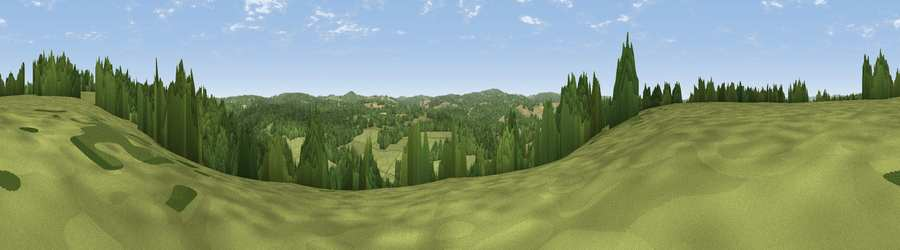

Viewpoint near Groombridge
#38131 in England · top 59% of its area beats it · near GroombridgeThe view, rendered

A 360° render of this exact spot computed from the terrain model, tree cover and land cover — summer colours, afternoon light, calibrated against photographs of famous viewpoints. Real trees, hedges and buildings will differ in detail.
The panorama
Grey silhouette: terrain skyline in each direction (720 bearings, Earth curvature and refraction included). Dashed green: skyline with trees (+15 m) and buildings (+8 m) as obstacles. Blue strip: how far the ground is visible on each bearing.
Where the view opens
Wedge length = distance to the farthest visible ground on that bearing (vegetation-aware). Rings at 10, 25 and 50 km.
What fills the view
48% grassland · 45% woodland · 6% cropland · 2% built-up
Angular shares of the visible panorama (visual magnitude), not map area. Landscape diversity 0.41 (0–1 Shannon).
Key numbers
More beautiful places nearby
The staircase of upgrades: each row has a higher view potential than everything closer. Driving times are estimates from straight-line distance, calibrated against real road routing — check an actual route before setting out.
| Place | Direction | Drive | Score |
|---|---|---|---|
| Viewpoint near Ashurst | W · 4 km | ~8 min | 42.3 |
| Viewpoint near Speldhurst | NNE · 5 km | ~10 min | 45.7 |
| Viewpoint near Cowden | WNW · 5 km | ~11 min | 53.2 |
| Viewpoint near Bidborough | NE · 7 km | ~14 min | 57.2 |
| Viewpoint near Upper Hartfield | SW · 9 km | ~18 min | 59.6 |
| Viewpoint near Sevenoaks Weald | N · 14 km | ~25 min | 62.3 |
| Viewpoint near Ide Hill | N · 14 km | ~25 min | 65.1 |
| Viewpoint near Ide Hill | NNW · 14 km | ~25 min | 67.9 |
51.12276, 0.19166 · source: screening · position refined by local search. Computed location — check access rights before visiting.